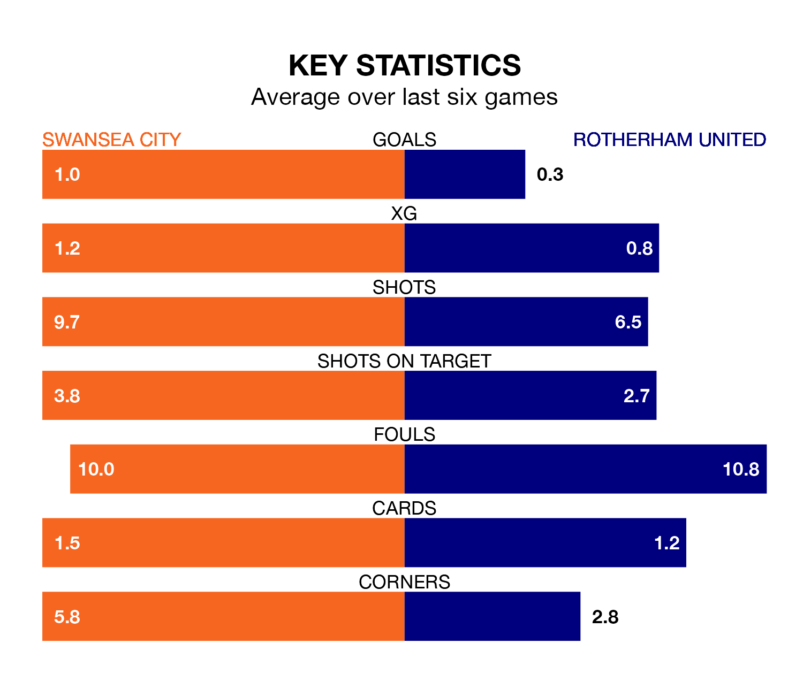

Swansea City are heavy favourites to keep all three points at home in Saturday's kick-off against Rotherham United.
The Swans, who sit 15th in EFL Championship with 42 games played, are priced at 1.3 to seal victory at the Swansea.com Stadium.
Sitting nine places and 27 points behind them in the table, Rotherham are 7.2 to win with *Betting Company*, while the draw is at 4.7.
In the last 10 years, Swansea and Rotherham have played each other on eight occasions. Swansea won five of them, Rotherham one, and they drew twice.
On average, the Swans scored 1.8 goals and the Millers 1.1 in those matches.
Their last meeting was on December 9, when Swansea won 2-1 away.
Swansea are in mixed form in EFL Championship, with two wins and a draw from their last six games.
With a win and a draw over that period, Rotherham's form is worse – they have taken four points from 18, compared to City's seven.
With 32 goals in 42 games so far this season, United are the league's lowest scorers with 0.8 goals per game. And they are conceding more than average, letting in 84 goals at a rate of 2.0 per game.
The Swans are also below average scorers, with 1.2 goals per game, compared to a league average of 1.3. They have conceded 1.5 goals per game.
Swansea's last match was on Wednesday, a 3-0 win against Stoke City, with Josh Key, Liam Cullen and Matt Grimes getting the goals for the Swans.
Rotherham lost 2-0 against West Bromwich Albion last time out, also on Wednesday.
Saturday's match will be refereed by Leigh Doughty, who has taken charge of 12 EFL Championship games so far this season, issuing one red card and booking 45 players. He has not awarded any penalties.
The last Rotherham game Doughty refereed was the 2-1 loss at home against Hull City on February 13. He is yet to oversee a match featuring Swansea this season.
Updated: 10:01 (UTC), 12/04/24